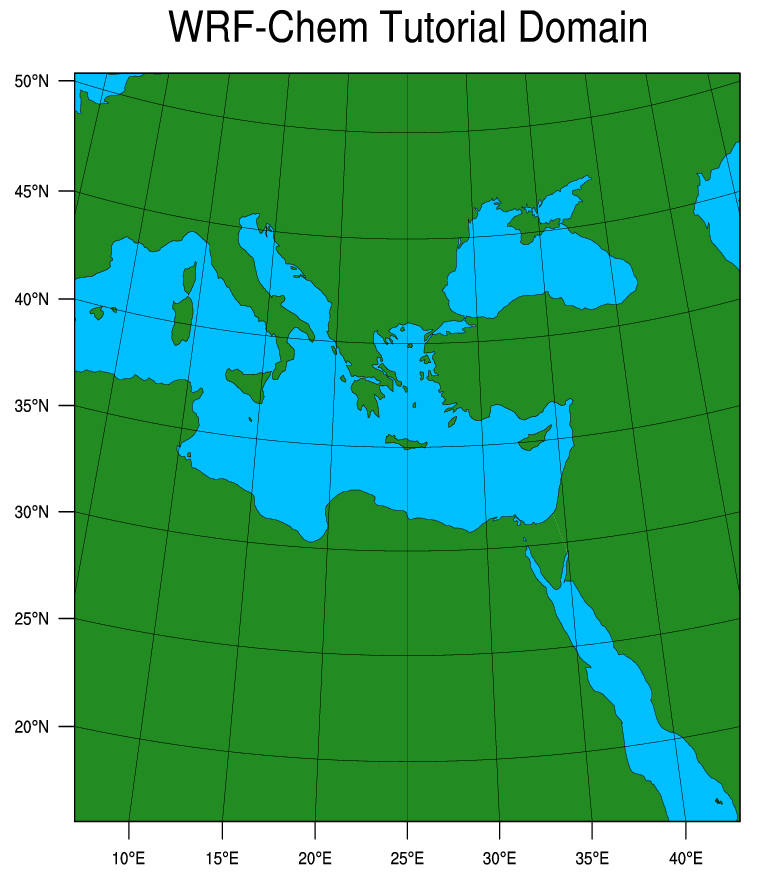
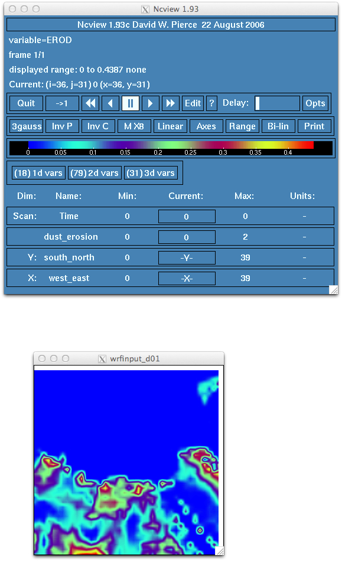

EXERCISE 1
Exercise Dust: Building the WRF domain to include dust erosion map and simulation of dust transport using WRF-Chem.
!You need to install WPS3.9 and WRF-Chem 3.9 on your machine. You can call them ${WPS} and ${WRF-Chem}.
!For the dust exercise you need to download the erodibility dataset.
! You can download the data from the WRF site: http://www2.mmm.ucar.edu/wrf/users/download/get_sources_wps_geog.html. All dust field variables are included in the "Complete Dataset".
!Load necessary libraries: impi, netcdf, ncl, nco, intel
!Here is the namelist you need to run this exercise: Namelist.
!Here is the data you need to run this exercise: Data.
cd ${WPS}
!Examine the namelist.wps
!!!!!!!!!!!!!!!!!!!!!!!!!!!!!!!!!!!!!
!BEFORE WE RUN GEOGRID
!!!!!!!!!!!!!!!!!!!!!!!!!!!!!!!!!!!!!
cd geogrid
ln -svf GEOGRID.TBL.ARW_CHEM GEOGRID.TBL
cd ..
./geogrid.exe
!You will see
!!!!!!!!!!!!!!!!!!!!!!!!!!!!!!!!!!!!!!!!!!!!!!!!!!!!
! Successful completion of geogrid. !
!!!!!!!!!!!!!!!!!!!!!!!!!!!!!!!!!!!!!!!!!!!!!!!!!!!!
Using the WPS, build a single WRF domain with a Lambert Conformal projection using geogrid.exe. The simulation will will use 6 h GFS analysis data starting on 14 July 2010 and ending on 19 July 2010. The domain should be (41, 41) grid points in size and use 100 km grid spacing. Center the domain at 35 degrees north and 25 degrees east. Your namelist.wps should have settings as follows:

! Visualize the geo_em.d01.nc file:
ncview geo_em.d01.nc
! Check such fields as HGT_M, LANDMASK, EROD, CLAYFRAC, SANDFRAC...
! Processed binary files from the GFS model are provided (FILE:2010-07-*)
!!!!!!!!!!!!!!!!!!!!!!!!!!!!!!!!!!!!!
! RUN METGRID
!!!!!!!!!!!!!!!!!!!!!!!!!!!!!!!!!!!!!
./metgrid.exe
! You will see
!!!!!!!!!!!!!!!!!!!!!!!!!!!!!!!!!!!!!!!!!!!!!!!!!!!!
! Successful completion of metgrid. !
!!!!!!!!!!!!!!!!!!!!!!!!!!!!!!!!!!!!!!!!!!!!!!!!!!!!
!!!!!!!!!!!!!!!!!!!!!!!!!!!!!!!!!!!!!
! Run MODEL (dust_opt=1)
!!!!!!!!!!!!!!!!!!!!!!!!!!!!!!!!!!!!!
cd ${WRF-Chem}
ln -svf ${WPS}/met_em.* .
! Check the created soft links to met_em* files
! Copy the sample namelist.input
!make sure "chem_opt=401"
!try dust_opt=1
!Run real.exe by typing the following command:
mpirun -np 8 ./real.exe
tail rsl.out.0000
! You will see
!!!!!!!!!!!!!!!!!!!!!!!!!!!!!!!!!!!!!!!!!!!!!!!!!!!!
d01 2010-07-16_00:00:00 Timing for output 0 s.
d01 2010-07-16_00:00:00 Timing for loop # 9 = 0 s.
d01 2010-07-16_00:00:00 real_em: SUCCESS COMPLETE REAL_EM INIT
!!!!!!!!!!!!!!!!!!!!!!!!!!!!!!!!!!!!!!!!!!!!!!!!!!!!
! Check the wrfinput_d01 file
ncview wrfinput_d01
! Check these variables: DUST_1, EROD, CLAYFRAC

! Run wrf.exe:
mpirun -np 8 ./wrf.exe
tail rsl.out.0000
! You should see:
!!!!!!!!!!!!!!!!!!!!!!!!!!!!!!!!!!!!!!!!!!!!!!!!!!!!!!!!!!!!!!!!!!!!!
d01 2010-07-16_00:00:00 wrf: SUCCESS COMPLETE WRF
!!!!!!!!!!!!!!!!!!!!!!!!!!!!!!!!!!!!!!!!!!!!!!!!!!!!!!!!!!!!!!!!!!!!!
! Create a directory: Dust1
mv wrfout_d01_2010-07-14_00\:00\:00 Dust1/
cp namelist.input Dust1/
cd Dust1
! Some diagnostics of the simulated dust fields
ncdump -v Times wrfout_d01_2010-07-14_00:00:00
ncview wrfout_d01_2010-07-14_00:00:00
! Using NCL
ncap -v -s "total_dust=DUST_1+DUST_2+DUST_3+DUST_4+DUST_5" wrfout_d01_2010-07-14_00\:00\:00 dust1_all.nc
ncl plot.ncl
! open plot.pdf
evince plot.pdf
! Check the dust* concentrations
! Visualize the simulated dust fields (ncview plots, Time series and 2d plots, animations)
!!!!!!!!!!!!!!!!!!!!!!!!!!!!!!!!!!!!!!!!!!!!!!!!!!!!!!
! Run WRF-Chem for another dust option
!!!!!!!!!!!!!!!!!!!!!!!!!!!!!!!!!!!!!!!!!!!!!!!!!!!!!!
! Repeat the same for dust_opt=3
! change dust_opt=1 to dust_opt=3 in namelist
vi namelist.input
mpirun -np 8 ./wrf.exe
ncap -v -s "total_dust=DUST_1+DUST_2+DUST_3+DUST_4+DUST_5" wrfout_d01_2010-07-14_00\:00\:00 dust3_all.nc
ncdiff dust3_all.nc ../Dust1/dust1_all.nc diff_dust3_1.nc
You can also try dust_opt=4 and compare with dust_opt=1 and dust_opt=3